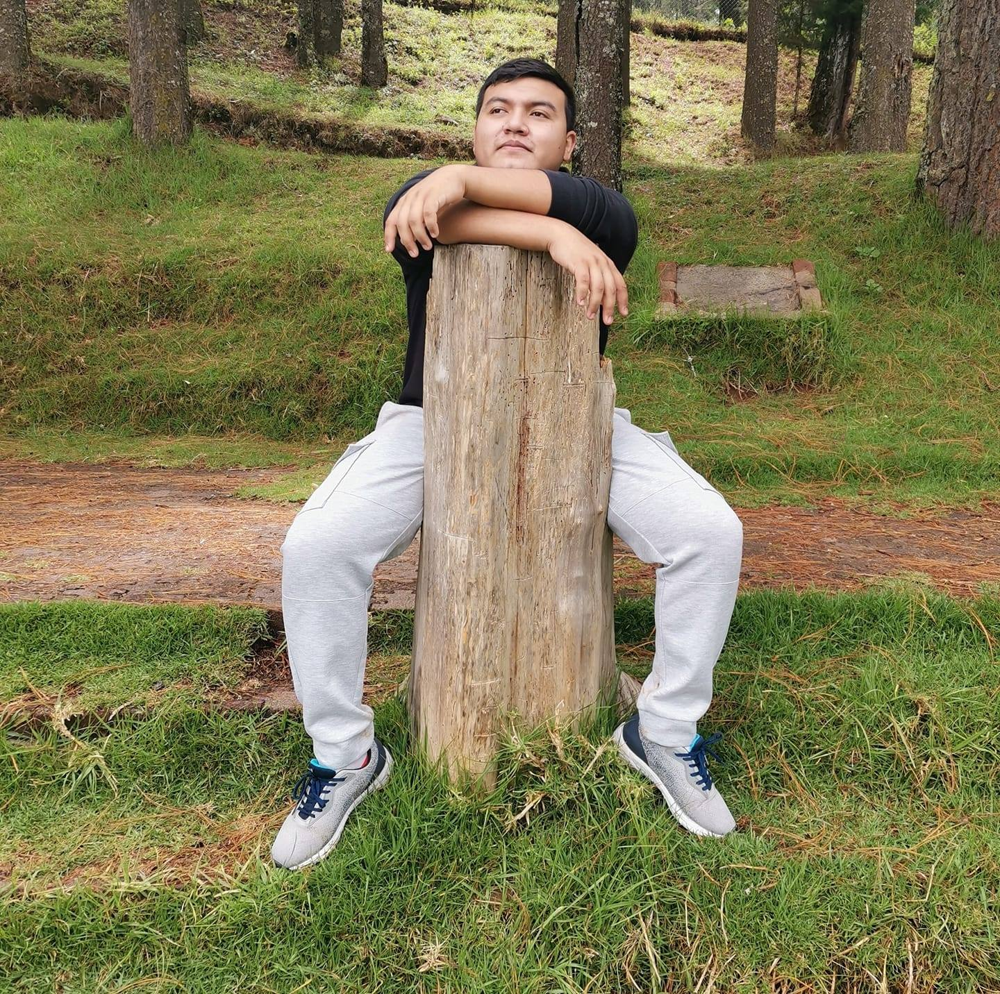
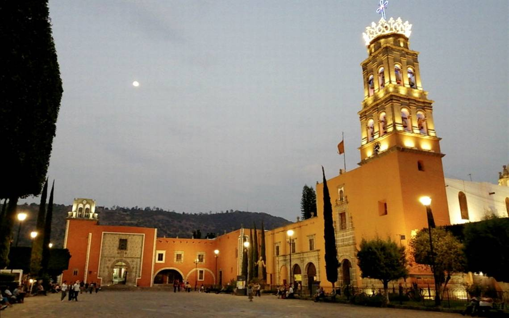
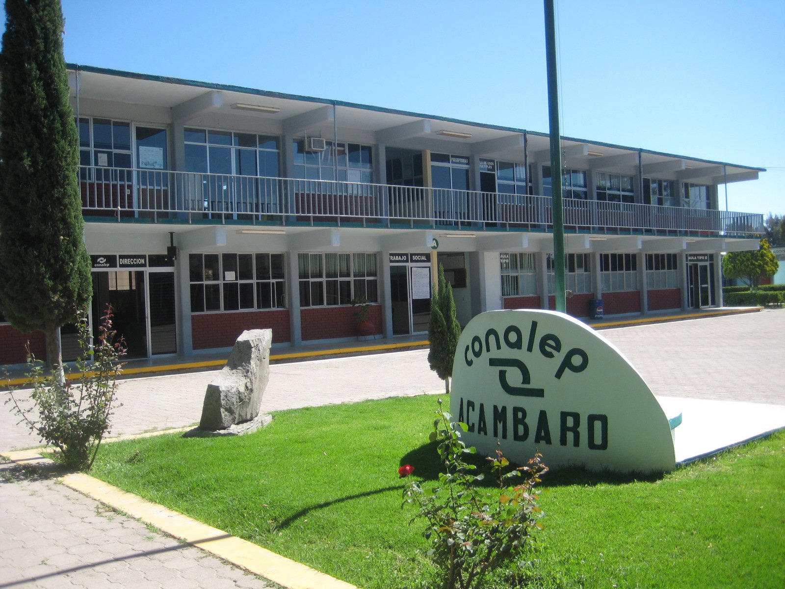

¿Quien soy?

Mi nombre es Cristobal Sanchez Orduña, tengo 18 años y soy originario de Acámbaro, un municipio de Guanajuato el cual se destaca por la elaboración del pan

Durante mi educación básica estuve solo en 3 escuelas, una por nivel, siendo la más reciente el Conalep Plantel Acámbaro, de la cual recientemente recibí el título de "Profesional Técnico Bachiller en Electromecánica" con un promedio de 9.0
